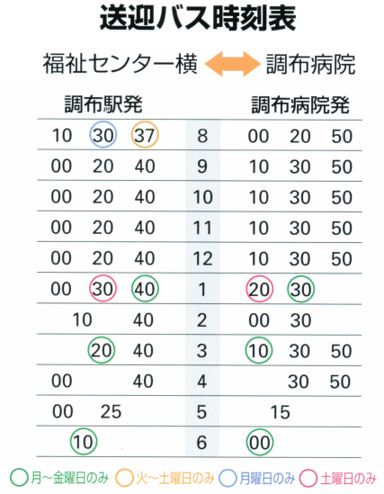
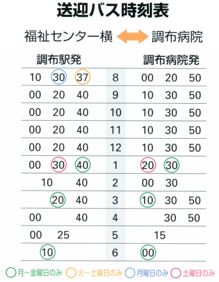

トップページ ＞ 病院へのアクセス
病院へのアクセス
交通手段
| お車の場合 | 調布I.C.から車で５分 | |
| 電車の場合 | 西調布駅より１０分 京王多摩川駅より１２分 | |
| タクシーの場合 | 調布駅南口からタクシー約１メーター | |
| バスの場合 | 京王バス「下石原2丁目」下車徒歩３分 | |
詳細はこちら(googleマップで見る）
調布駅南口、福祉センター横より病院の送迎バスが出ています

※京王多摩川駅経由、京王多摩川からの送迎バスの時刻は
調布駅発３〜５分後です。日曜祭日は運行しておりません。

| お車の場合 | 調布I.C.から車で５分 | |
| 電車の場合 | 西調布駅より１０分 京王多摩川駅より１２分 | |
| タクシーの場合 | 調布駅南口からタクシー約１メーター | |
| バスの場合 | 京王バス「下石原2丁目」下車徒歩３分 | |
調布駅南口、福祉センター横より病院の送迎バスが出ています

※京王多摩川駅経由、京王多摩川からの送迎バスの時刻は
調布駅発３〜５分後です。日曜祭日は運行しておりません。